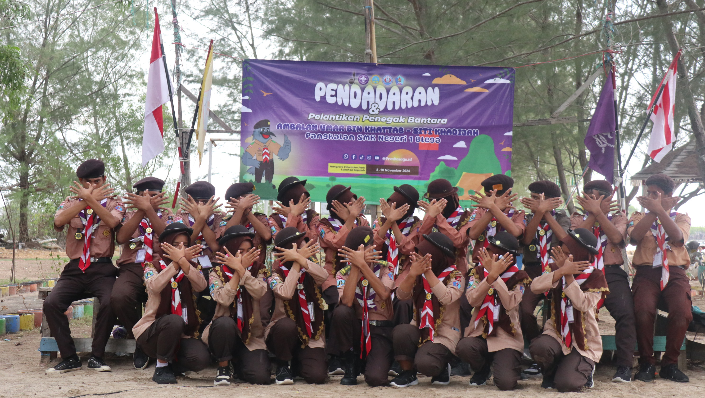
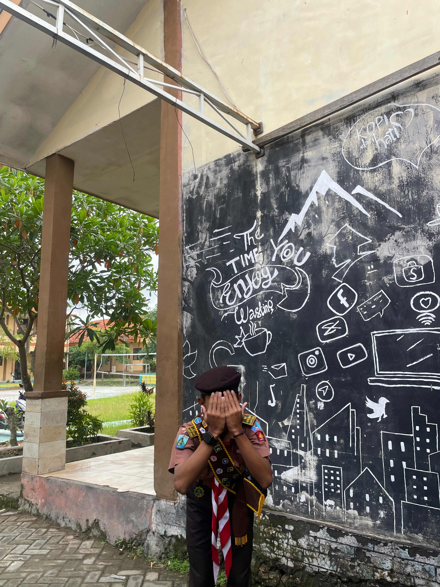

Tentang Saya
Nama saya : M.Afkar Afnani S
Saya adalah siswa yang menyukai teknologi, khususnya pengembangan
website. Sejak kecil saya sudah tertarik dengan
komputer
Selain belajar coding, saya juga suka menulis, dan
mendengarkan musik spoytify. Saya percaya bahwa teknologi akan lebih canggih
dari sekarang, dan akan terus berkembang
Moto hidup saya adalah: "Sekecil apapun usaha pasti Akan membuahkan hasil."
Organisasi Saya
Ini adalah foto Waktu Sebelum Melaksanakan Ekstra Pramuka
Foto ini di Ambil sewaktu berkegiatan Uji TKK memasak

Dokumentasi Sewaktu Acara Santunan Anak yatim

Ini Dokumentasi Acara tahunan rutin Santunan anak Yatim

Santunan Anak Yatim

Santunan Anak Yatim

Santunan Anak Yatim

Ini Foto Kaka-kaka Ambalan Sewaktu Acara Santunan Anak Yatim
Ini Foto Kaka-kaka Ambalan Sewaktu Acara Santunan Anak Yatim
Ini Foto Kaka-kaka Ambalan Sewaktu Acara Santunan Anak Yatim

Ini Foto Saya Afgan
Ini Adalah Foto saya gan Sewaktu Kegiatan pendadaran

Dokoment Santunan

Pendadaran memorable moment
Pendadaran memorable moment
Pendadaran memorable moment
Pendadaran memorable moment
Pendadaran memorable moment
Pendadaran memorable moment
Pendadaran memorable moment

Maulid Nabi Muhammad SAW the Ambalan 2025

Mukbang Finished Maulid Nabi 2025

Pendadaran Briefing rutin setiap ada kegiatan/Setiap sekolah
Mandi Hujan the moment Ambalan praskasaga

Saya M Afkar Afnani S
Saya adalah siswa yang Mengikuti Organisasi DA (Dewan Ambalan) saya Mengikutinya mulai dari 2024
yakni 26/08/2024 gugus depan Organisasi kami adalah 15.099-15.100, 15.099 untuk laki-laki dan 15.100 untuk perempuan
Organisasi saya yakni praskasaga / bisa di kenal pramuka smeksaga....
Atlet Cabor Kabaddi
Ini adalah saya yang memperoleh Emas di tingkat Provinsi
Ini adalah saya yang memperoleh Emas di tingkat Provinsi
Ini Adalah foto medali yang Alhamdulillah bisa di bawa team saya 5 Emas Untuk putra dan 5 perunggu Untuk team Perempuan
Kab.Bangkalan Menduduki Podium Championship 1 dari Cabor Kabaddi Sejawa timur/provinsi
Saya Selain Aktif di oragansasi saya juga Atlet Cabor kabaddi Alhamdulillah saya sudah membawa penghargaan Medali
Emas di tingkat kejuaraan provinsi dan Perak di kejuaraan tingkat event piala wali kota Surabaya Saya memulai
karir tersebut pada 01/11/2024 dan Alhamdulillah berlanjut sampai sekarang.............